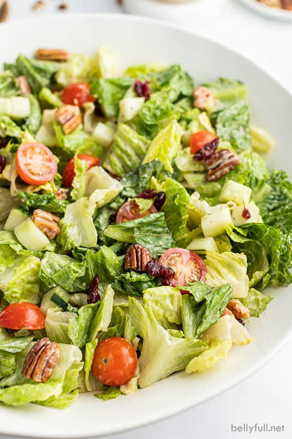

Yummy Side Salad

Description
A simple green side salad with romaine, cucumber, tomato, craisins,
pecans, and a blend of two different delicious dressings!
Ingredients
-
1/4 cup Caesar dressing
-
2 tbsp balsamic vinaigrette
-
4 cups chopped romaine lettuce
-
1 cup cherry tomatoes, cut in half
-
1 cup cubed cucumber
-
1/3 cup dried cranberries
-
1/3 cup pecan halves
Steps
-
In a small bowl, whisk together both dressings until fully combined.
-
In a large bowl toss the lettuce, tomatoes, cucumber, cranberries,
pecans, and 1/2 of the dressing mixture.
-
Divide among individual plates; drizzle with the remaining
dressing and season with a pinch of salt and pepper.
-
Enjoy!